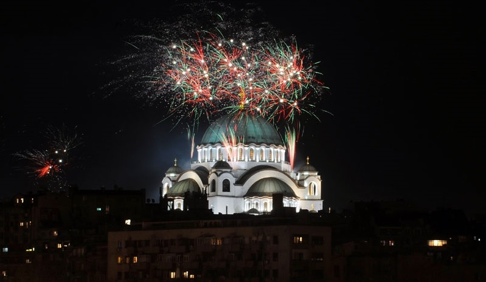
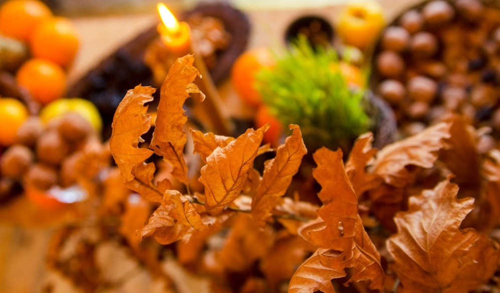
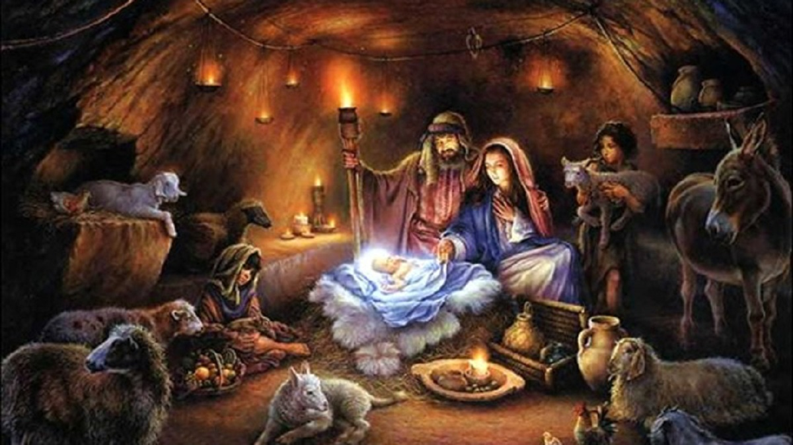
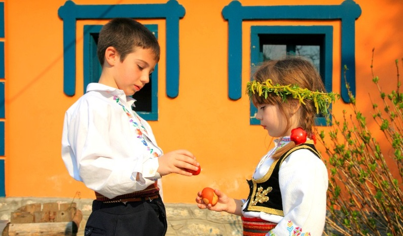
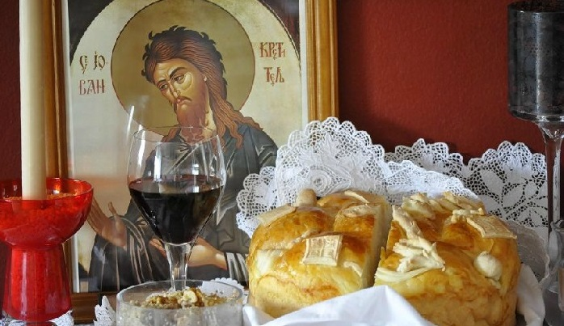
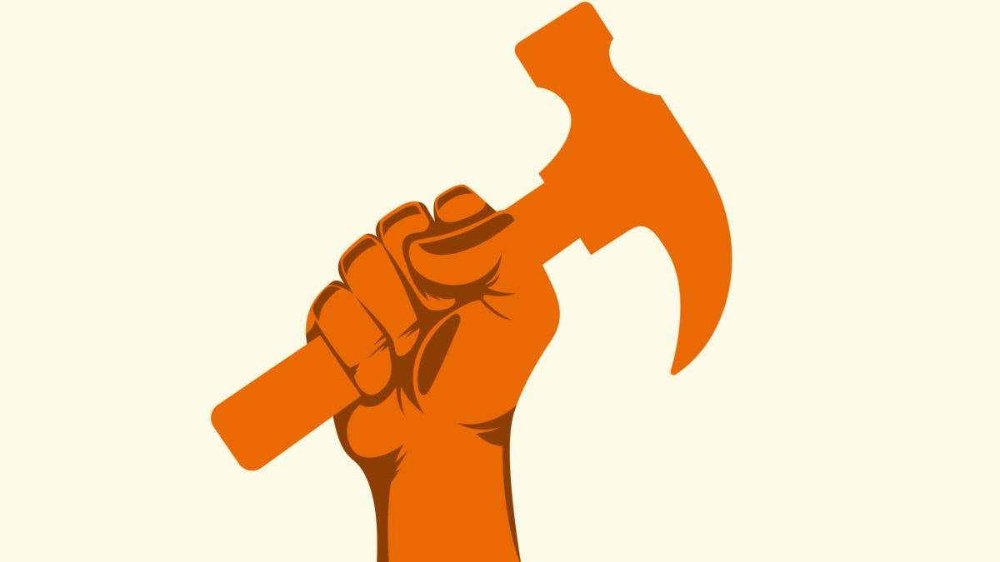

Holidays
New Year's Eve

What many Catholics do for their Christmas, Serbians do for New Year's Eve! The
tree is decorated for this special night, so Santa can bring children presents under it at midnight.
They write their wishes on a list that they put under the tree. The fireworks must be seen at midnight so
nobody bothers Santa! Families usually celebrate New Year all together with some family friends at
somebody's home. The whole day is euphoric, special outfit is ready and the same movies are played on TV so
the holiday feeling can be felt. Young people or parents whose children have grown usually go to their
town/city square to listen to a concert or they go to some destination to do the same. Other option is
kafana, which is a Serbian version of a restaurant with live music, everything for having a great time!
Christmas Eve

This one is very particular — in some parts of Serbia people even celebrate it
more
dedicated than tomorrow on a Christmas Day. Fathers go with their friends and sons to the woods
to
find
Serbian version of Christmas tree, we call it ''badnjak'', and actually that is a young oak
branch.
After a long and cold day which they handle with a little help from rakija (Serbian brandy),
they
come
home to the female side of the family. Women make pogača and česnica/kravajče (traditional types
of
bread) and the rest of the traditional fasting food (such as fish, pie, beans, fruit...). They
put a
coin inside of česnica, so the member of the family who gets a part of it with the coin is
supposed
to
be happy and wealthy for the rest of the year. Also, the oak branch is set on fire due to the
old
customs.
Christmas

In Serbia people celebrate Christmas on 7th January, not 25th December. This is
the
day
when family and friends meet in the morning at one of their homes and eat non-fasting food
(comparing to
the previous day). It is a day of joy and celebration. They all go to the local church and spend
the
day
visiting and seeing the relatives. In northern part of Serbia they split česnica on the
Christmas
day,
not the Christmas Eve.
Easter

Unlike Good Friday which is considered the saddest holiday of all, Easter is
children's
and generally Christians' favorite holiday. The eggs are being colored in different colors, but
the
first one is always red and it is called The Housekeeper (it stayes in the house until the next
Easter).
The favorite activity of the day is ''the egg fight''. Everybody chooses their own egg and they
hit
someone else's egg to see which one continues to fight and which one is going to be eaten.
People
also
exchange eggs and when they visit other people's houses, they bring them eggs as a present. This
day
people are also supposed to go to church and they also bring eggs there in exchange for eggs
they
take
there.
Slava

This is not a specific-date holiday. Every home that celebrates any slava has
their
saint
of the family. There are many saint days during the year, but the thing that decides on which
date
the
particular family celebrates is connected with the tradition of the family from man's side or
the
place
a family lives in (some villages have their own slava). The concept of the event is that the
host
doesn't invite people over, but everybody who wants to come is welcome. There is a lot of food
and
drinks on the table and people come at any time to talk to the hosts and the guests and have a
nice
time. The inevitable elements on the table are the candle, pogača (a particular round bread) and
red
wine. Usually, when a family does not celebrate slava that day, they go visit many people that
do
and
they go from house to house to show their respect. If you come to one's slava and the host
offers
you
with their home-made rakija, don't you dare to refuse it!
1st May

This holiday is still celebrated in Serbia as the Day of Work and it comes from
the
communist time in Yugoslavia. It is the day that honors all the work during the year and most of
the
people do not work that day, but instead go with their family and friends on a trip somewhere in
nature.
8th March

This is the International Women's Day that is celebrated since 1910, thanks to the
German
feminist Clara Zetkin. It is still very popular in Serbia and it can be noticed by female
teachers
going
around school halls with flowers, the streets being full of the flower vendors and men giving
gifts
to
their female partners. Many companies organise trips for their female employees on that day.